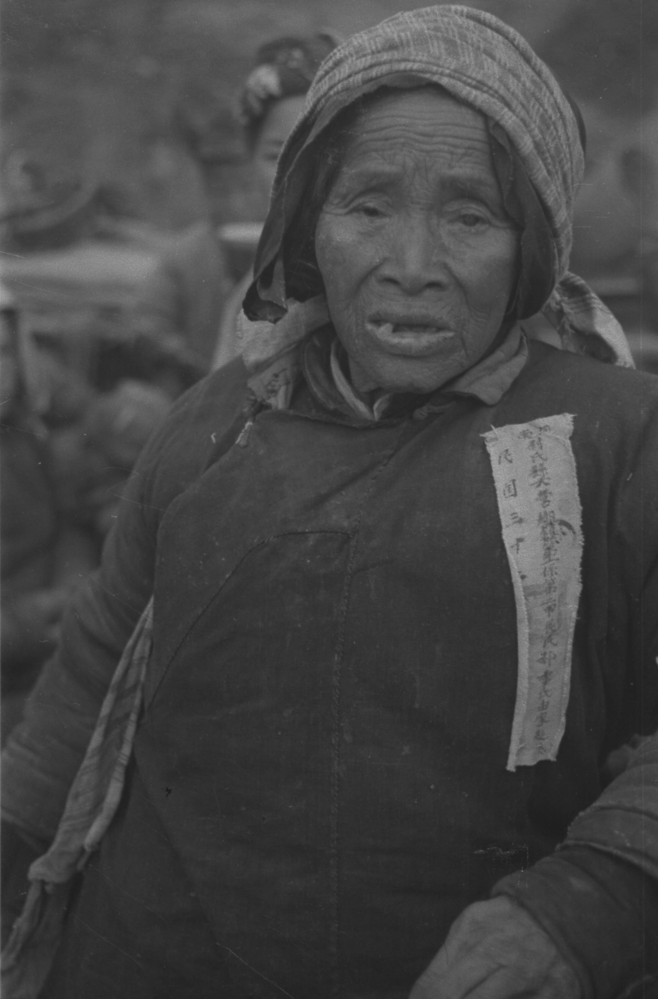
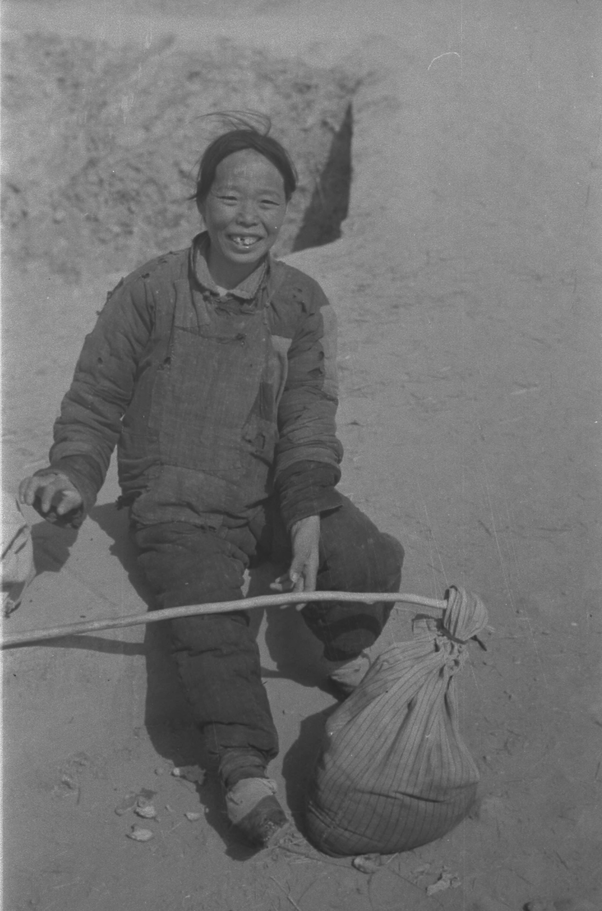

我的家乡新郑，洛阳与开封之间、黄河以南四十公里的一个小县，归郑州管辖。
这个小县，在今天的年代里默默无闻，但是就像河南很多地方一样，过去的千百年里，也有不少历史的风云变幻星河璀璨。“轩辕故里”，或者“黄帝故里”，“郑韩故城”，都是说的新郑。
新郑有一座山，叫具茨山，是中岳嵩山的余脉，绵延新郑、新密、禹州等几个县，在本县俗称“西南山”，因为山在县城西南，据说是“炎黄子孙”的“黄”的那个轩辕黄帝出生、活动、建都之地。山上有一座轩辕庙，据说还有一些岩画（整个具茨山地区有大规模岩画）。有人曾问为什么山上什么当时的古迹都没有，只有后人留下的，乍一想，也觉得好像少了点什么，不似其它名胜古迹那般丰富，不过再想想，那个时代不可能留下寺庙、道观、园林、字画、雕像，毕竟那时候才传说开始造文字。
小时候看过一本“轩辕故里的传说”，里面搜集了很多关于的传说，比如黄帝战蚩尤、制鼓、编制历法、造指南车，皇帝的妻子嫘祖养蚕，仓颉造字等。
黄帝生在新郑，那是怎么死的呢？在传说里，这样神一样的人物，肯定不能像一般人一样死去。于是，在传说里，黄帝在今天河南灵宝的荆山下铸鼎，铸成之后，天上下来神龙把黄帝接走了，人们舍不得皇帝走，赶紧去拉，拉下来了靴子和黄帝的弓，埋在铸鼎的地方作为衣冠冢，就是荆山黄帝陵。史记里有一句“黄帝崩，葬桥山”，陕西的桥山（黄陵县）就也有一个黄帝陵，另外还有河北和甘肃说自己是黄帝陵正宗，不知道真正葬在哪里。
黄帝以姬为姓，其后代一部分姓姬，还有很多是其他姓的始祖，“黄帝二十五子，其得姓者十四人”，五帝和之后的夏、商、周都是黄帝的后代，周朝也是用姬姓，周武王建立周朝之后分封诸侯的时候，跟周天子同姓的诸侯国有几十个，包括郑国、晋国、鲁国、蔡国等，秦国姓嬴，据说是黄帝的某个儿子的后代。一些国名，后来也演化为姓，比如郑国亡国之后，很多人改姓郑。
抄一段网上的：
《姬姓史话》一书中介绍，人口数量排名前300的姓氏中，直接源于姬姓的有120多个。不过，这些姓氏的演化方式不同，大体分为五类。
第一类是直接发源于黄帝的姓。黄帝直接演化而来的12个姓分别是姬、酉、祁、己、滕、箴、任、荀、僖、姞、儇（xuān）、衣。
第二类是周王朝分封的53个姬姓诸侯国。当时曹、吴、韩、杨、郑、蔡、晋、魏、沈等都是姬姓国，其国名后来都演化成为姓氏。
第三类是发源于姬姓的衍生姓氏。直接源于黄帝的12个姓，后来也逐渐分化为其他姓氏。比如，其中的祁姓被尧帝的祖先继承，后来衍生出刘、唐、杜、范、司空等姓；己姓被少昊继承，衍生出张、安、金、苏、温、顾等姓。
第四类是姬姓族人以祖先或自己的官职、职业、称号、名字、居住地为姓。比如，林姓的一支主要来源是姬姓，其祖先是周平王的庶子姬开。姬开的字是“林”，子孙以其字为氏，称“林氏”，后来演化成为林姓。
第五类是秦汉之后的改姓。姬传东介绍，姬姓先后经历过四次改姓，其中规模最大的两次，分别发生在东周灭亡时和唐朝中期，“秦灭东周，大多姬姓人改姓为周；唐朝时为避讳李隆基的名字，又有大部分姬姓人改姓为周。”
之前很多故事都是传说下来的，找不到什么史料。诗经大概算比较早的文字资料了。
诗经 郑风 溱洧
溱与洧、方涣涣兮。
士与女、方秉兰兮。
女曰观乎。
士曰既且。
且往观乎。
洧之外、洵吁且乐。
维士与女、伊其相谑、赠之以勺药。
溱与洧、浏其清矣。
士与女、殷其盈兮。
女曰观乎。
士曰既且。
且往观乎。
洧之外、洵吁且乐。
维士与女、伊其将谑、赠之以勺药。
大意是说，春天的时候，溱水和洧水汇流的地方，碧波荡漾，年轻男女拿着兰草在河边玩，一个女孩子说，去看吗？男孩子说，已经看过了，女孩子说，再去看看吧。后来玩得很开心，并以芍药相赠订情。
多么浪漫的故事，里面提到的溱水和洧水，古时候应该是很美丽的河吧。洧水是现在新郑的双洎河（不知道有多少人有和我一样的冲动念“双咱河”的）；溱水，有的说是新郑的黄水河，也有说是隔壁新密县的溱水。
说到新密，顺便说说郑州的几个县。
新密和新郑挨着，新密也是最早黄帝活动的区域，也是后来的郑国、韩国的地方；
巩县（现在叫巩义市），杜甫及其祖父杜审言生在这里，北宋皇陵所在，北宋除了徽钦二帝被掳走，剩下的都在这了，包拯墓也在这；
登封，有中岳嵩山、少林寺，除此之外，曾经也是夏朝都城，还有郭守敬的观星台；
中牟，处在郑汴之间，是兵家必争之地，比如官渡之战，沿着黄河往东打开封，一般都在中牟开打，后来岳飞在这打过，李自成在这打过，民国也在这里打过，列子是这里的，“貌若潘安”的“潘安”的祖籍；
荥阳，鸿沟就是从荥阳引黄河水，经中牟、开封，入颍河而通淮河，陈胜吴广起义后吴广攻荥阳不克死在这，楚汉争霸在这里相持很久，后来以鸿沟为界，三国演义里刘关张三英战吕布的虎牢关就是荥阳的泗水镇。
另一首诗经里的诗：
诗经 郑风 野有蔓草
野有蔓草、零露漙兮。
有美一人、清扬婉兮。
邂逅相遇、适我愿兮。
野有蔓草、零露瀼瀼。
有美一人、婉如清扬。
邂逅相遇、与子偕臧。
天龙八部木婉清的“婉清”二字，估计就是从这里出的。
还有另外一首我很喜欢的：
诗经 郑风 子衿
青青子衿、悠悠我心。
纵我不往、子宁不嗣音。
青青子佩、悠悠我思。
纵我不往、子宁不来。
挑兮达兮、在城阙兮。
一日不见、如三月兮。
左传里面，也有关于新郑的很多故事。
中学课本有一篇“郑伯克段于鄢”就是出自左传第一篇“隐公元年”，“多行不义必自毙”、“其乐融融”、“黄泉（不及黄泉，无相见也）”就是从这里出的。
郑国作为和周天子同姓（都姓姬）的诸侯国，刚开始还是比较猛的，隐公三年：“四月，郑祭足帅师取温之麦。秋，又取成周之禾。周、郑交恶。”后来周天子又联合几个诸侯国攻打郑国，被郑国击溃，将士要乘胜追击，郑庄公阻止了，然后派人慰问了周天子及其左右。
中原小国众多，而且四面都是对手，很难发展起来，不像外围的国家，至少一面或者两面是没有后顾之忧的，专心向中心打就好。战国七雄，都是从外围发展起来的。郑国慢慢衰落了，被秦、晋这些大国欺负。
抄一段百度：
在公元前632年（僖公二十八年）发生的城濮（在今河南陈留县）之战中，晋文公战胜楚国，建立了霸业。公元前631年（僖公二十九年），晋、周、鲁、宋、齐、陈、蔡、秦在翟泉（今河南洛阳）会盟，晋国在会上“谋伐郑”。公元前630年（僖公三十年），晋国和秦国合兵围郑。
郑国被围，烛之武晚上用绳子出城见秦穆公说，你帮晋国把郑国打下来的地方肯定是归晋国（晋国和郑国挨着，秦国和郑国之间比较远，还隔着周天子的洛阳），晋国的实力更强了，秦国相对就弱了，这样对你们没啥好处。假如放郑国一马，我们就是你东边道路上热情好客的主人，以后你的人来往路过，我们管吃管住，这样对你绝对没有坏处啊。文言是：若舍郑以为东道主，行李之往来，共其乏困，君亦无所害。
所以各位亲爱的朋友们，我们新郑才是世上最早的(被逼出来的)“东道主”。
然后秦穆公同意了，撤兵，还留下三个将军帮郑国守北门（晋国在郑国的北面）。晋国的将士还想打，晋文公说，我是靠秦穆公才上位的，打他不好，撤了。
这还没完，后面还有一堆事。
过了两年，僖公三十二年，“夏四月己丑，郑伯捷卒。卫人侵狄。秋，卫人及狄盟。冬十有二月己卯，晋侯重耳卒。”一年之内，郑庄公和晋文公都死了。前面帮郑国守北门的三个秦将之一送信回秦国，说郑国让我们掌管他们北门，秦国大军偷偷的进来打枪的不要，我们可以夺了郑国。秦军到了洛阳东边的滑国（现在的偃师）的时候，郑国贩牛的商人弦高发现了，于是“弦高犒师”，一边把自己的牛和牛皮以郑国名义送去秦军慰问，另一方面派人通知郑国。
这边郑穆公派人去看北门秦军，已经整好行李、磨好兵器、喂好马了（“郑穆公使视客馆，则束载、厉兵、秣马矣”）。“厉兵秣马”就是从这里出的。于是逐客，三个人分头投奔他国。另一边，孟明觉得人家有防备，胜算不大，顺手灭了滑国，回了。然后在经过洛阳西面的崤山的时候，被晋国伏击，就是课本“崤之战”那一段。
早知道这一串故事，当时背课文也会觉得有意思一些。
郑国后面还有更衰落的时候。。。。到了襄公二十六年，秦、楚联合攻郑，郑国一个将军被楚国俘虏了，楚国的公子围来争功，是“上下其手”的出处。
再到后来，被韩国灭了，韩国迁都新郑，韩国也很弱，后来被秦灭了。新郑做郑国和韩国的都城，有五百多年，所以叫郑韩故城。
之后好像没有太多故事。韩非子是新郑的，被同门师兄弟李斯给害在秦国。运筹帷幄之中决胜千里之外的张良，也是新郑的。白居易，生在新郑，祖籍山西。
现在的新郑人，（至少很多）传说是从山西洪洞县大槐树下移民过来的。大槐树移民的故事，记得《轩辕故里的传说》那本书里有很多。
我觉得这个还是很有可信程度的，因为有几个说法很多地方的人都很一致。
首先是所谓“洪洞县大槐树”，很多地方的人都说自己老家是山西省洪洞县大槐树下。
一个比较公认的传说是“解手”。把上厕所称之为“解手”，大便是“解大手”，小便是“解小手”，乍一听很难理解。传说中是因为当初从山西移民过来是被逼的，所以一路上是绑着双手连成串，有官兵押解的，需要方便的时候就要让士兵把手解开，一路上形成了“解手”的叫法。
还有一个是“背手”。“背手”就是一般说的走路或者站立的时候把手放在背后，在我们那里的方言是不说“背手”的，我姥姥和我妈都是说“bei bang zhu shou”，之前我一直不知道中间两个字是什么的，河南很多方言不仔细想都不知道是用的什么字的，后来看到这个传说，忽然想明白，应该是“背绑住手”。可能真的是因为当初被押解的时候手是绑在身后的。
还有一个现象是，小脚趾都是两瓣的。上大学的时候，我还专门看了其他地方同学的小脚趾，确实不是两瓣的，第一次看到小脚趾不是两瓣的。
顺便说几句河南方言。
很早之前，侯宝林有一个相声，说的是有四句话，用各地方言怎么说，从4x4 16字，到4x3，4x2，到4x1一共4个字最简便的就是河南话。之前看到帝都宣传北京话，把很多河南话的说法讲成是北京话。
我觉得是因为说得时间太长了，所以河南话很多说得更省劲更随意的，比如儿化韵；还有很多节省音节的发音，比如“没有”说“冇”，“门外”也是一个字，（把“外”写在“门”里面，汉语拼音我拼不出来），“言语一声”会说成“yuan一声”，还有一个很有名很常用但是写不出是哪个字的发音“qiuo”的字，我觉得原本应该是“欺我”，“qiuo”很可能是“欺我”反切得到的发音。
我觉得河南话是保留了很多古汉语发音的。
古无轻唇音，比如番（pan）禺现代做地名仍读作pan而不是番茄的fan，杜甫（fu）古代应读作杜pu，孵（fu）小鸡古代应读作bu小鸡，这些在河南方言中现在还是如此；
古无舌上音，可能是说上古没有今天普通话中的 zh、ch、sh、r 几个声母，河南话里面是有r的，但是至少新郑附近方言碰到zh、chi、shi，尤其是sh，基本都发z、c、s，比如老师（shi）读作老si1，谁（谁）读作sei2，检查（cha）读作检ca2，不过中国还是读作zhong1国、竹子还是读作zhu2子。
物换星移，几千年过去了，历史上很多兴衰荣辱，今人听起来其实很难有太多的感触。这其实是一片灾难深重的土地。
说点近的。
1938年，虽然有4月份的台儿庄大捷，但是随后的徐州会战很可耻的刚开始就失败了，于是顺利丢了商丘、开封，下一步就是陇海线和平汉线交汇的郑州。于是为了迟滞日军，“1938年6月9日凌晨，经过两天两夜不停的挖掘，几乎在距郑州30公里的中牟失守的同时，花园口也终于挖开了”。于是黄河水从南岸的花园口而出，经过中牟、尉氏向东南（新郑在郑州正南，好像没受太大影响）, “整个黄泛区由西北至东南，长达400余公里,流经豫、皖、苏3省44个县30多万平方公里的地方”。。。据说河南省档案馆记载，造成死亡超过89万，相当于三个南京大屠杀，受灾人口超过1200万。
洪水过后，1941-1943连续两年的大旱，还有导致秋粮绝收的蝗灾。我老妈说我姥爷讲，当初蝗虫来的时候，地里从这头赶到那头，来回三趟，蝗虫没赶走，庄稼就吃没了。可是征粮不减。“当时的河南，以“兵役第一，征实第二”著称，征粮数额仅次于“天府之国”四川，但四川当时是稳定的大后方，风调雨顺，而河南已是半省沦陷，水灾兵灾不断。异常沉重的兵役和赋税，使得河南人民在正常年景，也得靠野菜杂粮勉强度日。但从1942年春天起，河南农民们发现，天不下雨了”。
接下来就是小说和电影里的1942年（主要是1943年）大饥荒。
到这里，我仍然没有太多的触动心灵的感受，直到我看到了下面第一张图片。

照片说明为：“河南新郑县城的告示字迹可看得见，基本明白照片背景，欢迎美国记者福尔曼、白修德勘查灾区的通告；1943年灾区气候依然干旱，灾情进一步恶化。这时，灾区的情况开始外传，2月初重庆版《大公报》刊登了该报记者从河南灾区发回的关于大饥荒的报道，却遭到国民政府有关部门当即勒令停刊三天的严厉处罚。消息传来，驻重庆的外国记者一片哗然，白修德决定亲赴灾区一探虚实。月底，经过有关部门批准，白修德来到河南灾区。”
从照片上我能辨出的文字如下：
新郑县警察局粘贴广告栏
欢迎胸怀豫灾远道勘查的福曼白修德二位先生！ 县政府
欢迎 盟友查灾要加强救灾工作！ 新郑县政府
新郑县工读学校招生简章
粘贴栏内
违者罚款
第玖号
当意识到这些照片记载的就是故乡几十年前的先人们（甚至包括我的爷爷辈的）和他们承受的苦难之后，从来没有其他照片能对我心灵有如此的触动。

第二张照片，“拍摄者白修德本人和其交通工具，1943年，在美国《时代》周刊驻华记者白修德看来，这是他人生中的转折之年，也是“所有记忆中最为刻骨铭心”的一年。这两个外国人被河南修罗地狱般的场面震呆了：无穷无尽的难民队伍，随时因寒冷、饥饿或精疲力竭而倒下；寻找一切可以吞咽的东西来吃的饥民，·因此而失去生命；一群群恢复了狼性的野狗，肆无忌惮地吞噬着死尸……最触目惊心的，母亲将自己的孩子煮了吃，父亲将自己孩子煮了吃……有的家庭，把所有的东西卖完换得最后一顿饱饭吃，然后全家自杀……1943年3月22日，白修德的报道《等待收成》刊发在美国《时代》周刊。”
照片上城墙上面的字为“流最后一滴血绝（？）不屈服”，不知道这是不是新郑郑韩故城的老城墙，不知道路旁的人是不是某些同学、朋友的先人。
接下来是两位记者在灾区拍摄的照片，我想里面的很多人和场景应该是在我的家乡新郑拍的吧。我看到了正在饿死和已经饿死的故乡的先人，正在被割去树皮和已经被割去树皮的故乡的树，逃荒的人们和逃亡后沉寂的故乡的乡村。摘录几张照片如下：
饿倒（死？）的灾民。

这张照片是收容点的灾民，胸前布条上字为：“河南尉氏县大（？）营？镇第一保第二甲民氏（？）郝（郭？）李（季？）氏由家赴X 民国三十X。。。。。。”

这是唯一露出笑容的灾民，照片说明是，“步行逃离灾区的妇女”。
看一场电影，再沉重不过两个小时，再花点时间心情沉重一下不过之多几天时间，但是故乡的人们，不知道怎样才能一天一天一步一步熬过这些苦难，又有多少人经受了苦难却没有最终熬过去。
即使熬过了灾荒，在沦陷的国土上，历史并不像现在抗日神剧一样，有无数英勇而神奇的英雄，故乡的人们，并没有得到这个国家像样的保护，他们更多的日子里是无奈承受这苦难与屈辱。有点讥讽的是，当时河南四大害“水旱蝗汤”最后一害竟然是国军汤恩伯的军队.
白修德的报道中，有一些相关的文字:
1944年春夏之交。这一年，日本在太平洋战场受到重创后，孤注一掷在中国发动空前规模的“一号作战”，意欲打通直通南方的大走廊。历时38天的战斗中，日军5万余人的兵力，打垮了40万人的国军，豫中30多个县城被日军占领。
汤恩伯部向豫西撤退时，豫西山地的农民举着猎枪、菜刀、铁耙，到处截击这些散兵游勇，后来甚至整连整连的解除他们的武装，缴获他们的枪支、弹药、高射炮、无线电台，甚至枪杀、活埋部队官兵。5万多国军士兵，就这样束手就擒。
“中原王”汤恩伯恼羞成怒，这位河南民众口中的“四害”（水、旱、蝗、汤）之一，把中原会战失败的罪责推到河南百姓身上，破口大骂：河南人都是卖国贼。
日军攻克的汤恩伯部仓库中，仅面粉便存有100万袋，足够20万军队一年之用。为什么不分出一些来赈灾呢？早在白修德还在河南时，他便提出了这个疑问。一个官员告诉他:“如果人民死了，土地还会是中国的；但如果士兵饿死了，日本人就会占领这些土地。”
当有人像汤恩伯一样责骂河南农民时，杰克·贝尔登用英语记录了河南农民理直气壮的回答：“could the Japanese be worse than the army of Chiang Kaishek? " ——难道日军会比蒋军更坏吗？
历史确实是非常沉重的东西。
又几十年过去了，到如今，这个古老的小地方与河南很多其它地方一样，在历史长河中继续前行。